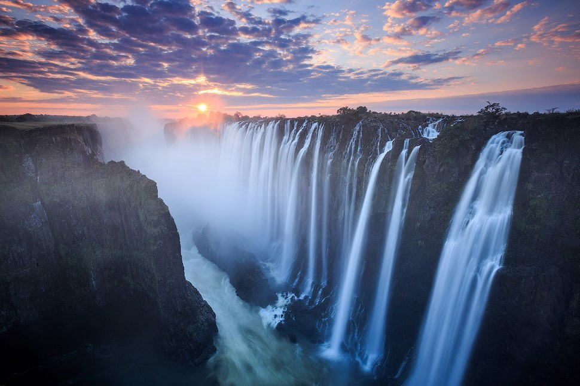
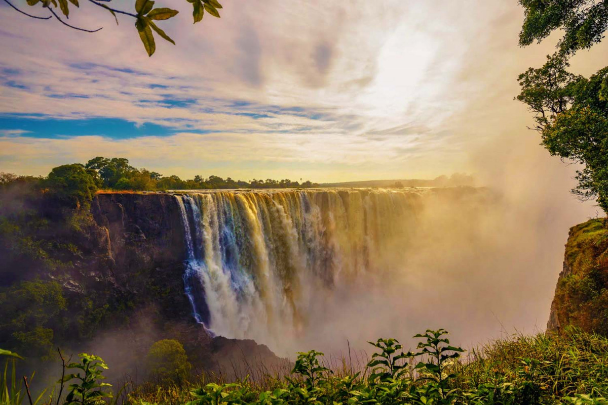
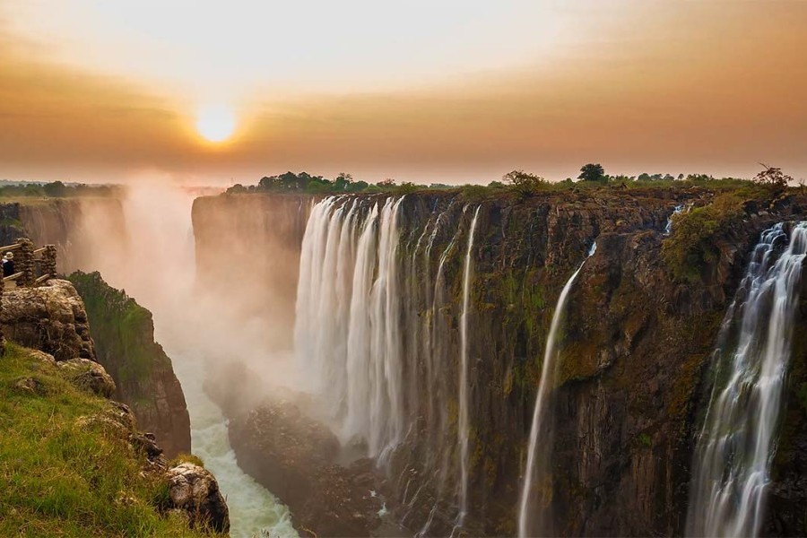

1.Замбійці називають його «Мосі-оа-Тунья», що в перекладі означає «Грімучий дим». 2.Перший європеєць, дослідник Д. Лівінгстон, який відвідав водоспад Вікторія у 1855 році, назвав його на честь англійської королеви. 3.Розташований водоспад Вікторія на кордоні двох африканських країн: Замбії та Зімбабве. 4.За співвідношенням ширини та висоти Вікторія посідає перше місце серед водоспадів світу. 5.Через Замбію до водоспаду Вікторія прибуває більше туристів, ніж через Зімбабве, бо на замбійській стороні туристична інфраструктура хоч якось розвинена. 6.Це єдиний у світі водоспад шириною понад 1 км та висотою понад 100 метрів. 7.У найвищому місці висота водоспаду Вікторія сягає 120 метрів. 8.Європейці практично не цікавилися ним упродовж півстоліття після його відкриття, але після того, як у 1905 році до нього простягли залізничну гілку, сюди ринули туристи.
  